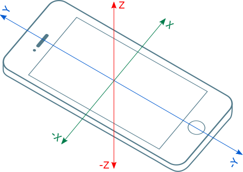

1. Introduction
The Accelerometer Sensor extends the Generic Sensor API [GENERIC-SENSOR] interface to provide information about acceleration applied to device’s X, Y and Z axis in local coordinate system defined by device.
2. Examples
let sensor = new AccelerometerSensor({includeGravity: false, frequency: 60}); sensor.start(); sensor.onchange = event => { console.log("Linear acceleration for an X-axis: " + event.reading.accelerationX); console.log("Linear acceleration for an Y-axis: " + event.reading.accelerationY); console.log("Linear acceleration for an Z-axis: " + event.reading.accelerationZ); } sensor.onerror = event => console.log(event.error.name, event.error.message);
3. Security and Privacy Considerations
There are no specific security and privacy considerations beyond those described in the Generic Sensor API [GENERIC-SENSOR].
4. Model
The Accelerometer Sensor’s associated Sensor subclass is the AccelerometerSensor class.
The Accelerometer Sensor’s associated SensorReading subclass is the AccelerometerSensorReading class.
The Accelerometer Sensor has a default sensor, which is the device’s main accelerometer sensor.
The Accelerometer Sensor has a single supported reporting mode which is "auto".
The Accelerometer Sensor’s permission name is "accelerometer". It has no associated PermissionDescriptor.
The Accelerometer Sensor has an associated abstract operation to retrieve the sensor permission which must simply return a permission whose name is "accelerometer".
The Accelerometer Sensor has an associated abstract operation
to construct a SensorReading object which creates a new AccelerometerSensorReading object and sets its accelerationX, accelerationY and accelerationZ attributes
to zero.
The linear acceleration is an acceleration that is applied to the device that hosts the sensor, without the contribution of a gravity force.
The AccelerometerSensorReading's attribute values must be in [SI] units for acceleration, metre
per second squared (m/s^2), expressed in a three-dimentional Cartesian local coordinate system defined by the device.
The frame of reference for the acceleration measurement must be inertial, such as device in free fall would provide 0 (m/s^2) acceleration value for each axis.
The sign of the acceleration values must be according to the right-hand convention in a local coordinate system defined by the device.
Note: The local coordinate system of a mobile device is usually defined relative to the device’s screen when the device in its default orientation (see figure below).

5. API
5.1. The AccelerometerSensor Interface
[Constructor(optional AccelerometerSensorOptions accelerometerSensorOptions)] interface AccelerometerSensor : Sensor { readonly attribute AccelerometerSensorReading? reading; readonly attribute boolean includesGravity; };
To Construct an AccelerometerSensor Object the user agent must invoke the construct a Sensor object abstract operation.
5.2. The AccelerometerSensorOptions Dictionary
dictionary AccelerometerSensorOptions : SensorOptions { boolean includeGravity = true; };
By default, the Accelerometer sensor would provide acceleration information including
the effect of the gravity force. In cases, when linear acceleration information is
required, AccelerometerSensorOptions dictionary with and dictionary member includeGravity that is set to false,
must be provided to AccelerometerSensor constructor.
5.3. The AccelerometerSensorReading Interface
[Constructor(AccelerometerSensorReadingInit AccelerometerSensorReadingInit)] interface AccelerometerSensorReading : SensorReading { readonly attribute double accelerationX; readonly attribute double accelerationY; readonly attribute double accelerationZ; }; dictionary AccelerometerSensorReadingInit { double accelerationX = 0; double accelerationY = 0; double accelerationZ = 0; };
5.3.1. The AccelerometerSensor attributes
The includesGravity attribute of the AccelerometerSensor interface represents whether the acceleration information provided by the sensor includes effect of the gravity
force. In case when includesGravity equals to false, AccelerometerSensor will provide linear acceleration information.
5.3.2. The AccelerometerSensorReading constructor
The AccelerometerSensorReading constructor accepts AccelerometerSensorReadingInit dictionary that is used
for initialization of AccelerometerSensorReading attributes.
5.3.3. The AccelerometerSensorReading attributes
The accelerationX attribute of the AccelerometerSensorReading interface represents the acceleration along X-axis.
The accelerationY attribute of the AccelerometerSensorReading interface represents the acceleration along Y-axis.
The accelerationZ attribute of the AccelerometerSensorReading interface represents the acceleration along Z-axis.
6. Acknowledgements
Tobie Langel for the work on Generic Sensor API.
7. Conformance
Conformance requirements are expressed with a combination of descriptive assertions and RFC 2119 terminology. The key words "MUST", "MUST NOT", "REQUIRED", "SHALL", "SHALL NOT", "SHOULD", "SHOULD NOT", "RECOMMENDED", "MAY", and "OPTIONAL" in the normative parts of this document are to be interpreted as described in RFC 2119. However, for readability, these words do not appear in all uppercase letters in this specification.
All of the text of this specification is normative except sections explicitly marked as non-normative, examples, and notes. [RFC2119]
A conformant user agent must implement all the requirements listed in this specification that are applicable to user agents.
The IDL fragments in this specification must be interpreted as required for conforming IDL fragments, as described in the Web IDL specification. [WEBIDL]